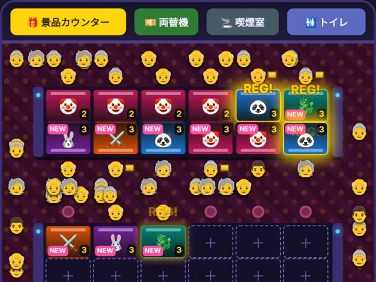

🎰 スロットホール
経営物語
あなたは街のスロットホールの新米オーナー。台の設定を決めて、新台を入れて、お客さんを呼び込もう。30日後の総資産でランクが決まります。
▶ 今すぐ遊ぶ（無料）スマホ・PC対応／インストール不要／進行は自動で保存
※ このゲームはフィクションの経営シミュレーションです。実際のお金や景品とは一切関係なく、ギャンブルをすすめるものではありません。登場する機種名はすべて架空のものです。
遊び方
- 朝の予報を確認：その日の天気や出来事、客足予想、1週間のカレンダーが表示されます。
- 台の設定を決める：ホール見取り図の台をタップして、設定1〜6を選びます。
- 作戦を立てる：チラシやSNS広告、イベント日で客足を増やせます。
- 営業開始！：お客さんが入口から来店して台で遊びます。当たるとドル箱が積み上がります。
- 結果を見て次の日へ：利益と評判をチェックして、明日の作戦を考えましょう。
ゲームのしくみ
設定のジレンマ
設定が低い台はお店が儲かりやすい反面、「出ない店」と思われて評判が下がります。設定が高い台はお客さんが勝ちやすく評判が上がりますが、お店は赤字になりがち。評判が下がると来店するお客さんが減っていくので、甘い台と辛い台をどう混ぜるかが腕の見せどころです。
評判と新機種
評判が上がると、メーカーが人気機種（サムライ・ラッシュ、宇宙うさぎ、ドラゴン魂）を卸してくれるようになります。人気機種は値段が高いぶん、たくさんのお客さんを呼べます。導入から3日間は「新台効果」でさらに人が集まります。
カレンダーと特別な日
- 👴 年金支給日（偶数月の15日）：お年寄りがたくさん来店。シンプルなAタイプの台が大人気になります。
- 💴 給料日（毎月25日）：若いお客さんが増えて、AT機に人が集まります。
- 🎉 土日：客足が35%アップ。
- ☔ 雨・🌀 台風・📺 TV取材など、天気や出来事は当日の朝にわかります。
イベント日と「ガセイベ」
5万円でイベント日にすると客足が1.6倍に。ただし平均設定が4未満だと「ガセイベだ！」と言われて評判が大きく下がります。やるなら本気で。
攻略のコツ
- 最初は全部の台を辛くせず、何台かは設定4以上にして評判を守りましょう。
- 「満席で帰ったお客さん」が多い日が続いたら、台を増やすかホール拡張のタイミングです。
- 年金支給日の前日に、ピエロ7やネオンパンダを増やしたり設定を見直したりすると効果的。
- スタッフは8台ごとに1人必要。台を増やしたら雇うのを忘れずに。
- 台はたまに故障します。手持ちのお金には少し余裕を持たせておきましょう。
ランクの基準
30日目の総資産（所持金＋台の資産価値）で決まります。
- S：1000万円以上
- A：650万円以上
- B：400万円以上
- C：250万円以上
- D：それ未満
所持金がマイナスになると倒産でゲームオーバーです。
更新履歴
- カレンダーの日付をタップすると、その日の詳細がわかるようにしました。
- 客足予想・満席・順番待ちを追加。客足の違いが見てわかるようになりました。
- ホールを俯瞰の見取り図に。年金支給日・給料日を追加。
- 公開しました。